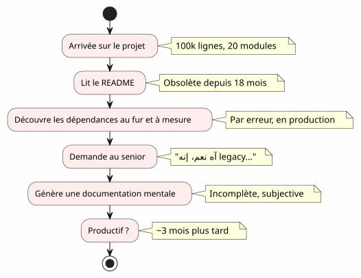
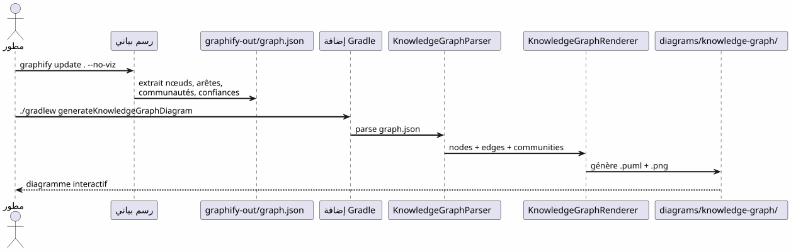
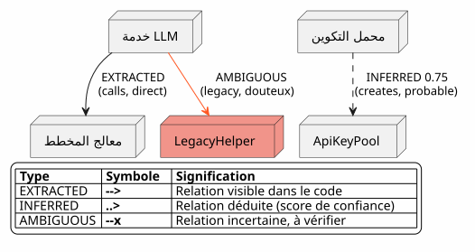
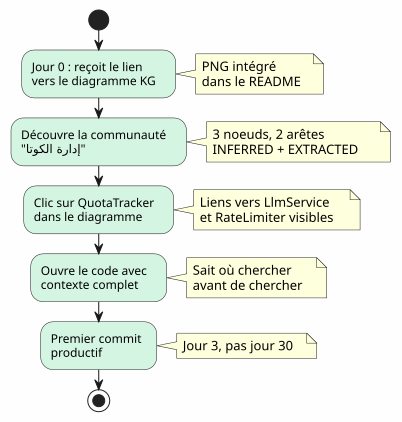

Knowledge Graph كأداة لفهم قاعدة الكود
Publié le 20 April 2027
أنت تصل إلى مشروع يحتوي على 100,000 سطر. عشرين وحدة، مئة فئة، تبعيات غير مرئية، تاريخ من إعادة الهيكلة مهملة. يعد ملف README ببنية "microservices" لكن الرمز يروي شيئًا آخر. كم من الوقت تحتاجه لتصبح منتجًا؟ثلاثة أشهر— إذا كنت محظوظًا. وماذا لو أن خريطة تفاعلية للرمز، تم إنشاؤها تلقائيًا، يمكنها تقليل ذلك إلى ثلاثة أيام؟
- عصبة
-
(Empty)
جدار التوجيه
كل مطور مرّ بهذه المشهد :
-
اليوم 1: نعرض لك ملف README (آخر تحديث: قبل 18 شهرًا)
-
اليوم 3: تكتشف أن الوحدة`billing`يستدعي الوحدة سراً`notification`
-
اليوم 7: يخبرك أحد الأقدمين "نعم، هذه الفئة في الواقع تفعل شيئين، كنا نخطط لتقسيمها
-
اليوم 14: أنت تدرك أن كل الذكاء التجاري هو في`utils/LegacyHelper.java`— ملف غير مُشار إليه في أي مكان

المشكلة ليست نقصًا في الوثائق — إنهانقص بطاقة. خريطة تُظهر المنطقة الفعلية، وليس المنطقة الخيالية للتصميم الأخير.
ما هو رسم بياني للمعرفة؟
Knowledge Graph هو تمثيل منظم للالمعرفةالمحتوى في قاعدة الكود الخاصة بكم:
| كيان | مثال في الكود | دور في الرسم البياني |
|---|---|---|
العقدة |
الصف، الوظيفة، المفهوم |
رأس الرسم البياني |
توقف |
استدعاء, إرث, استيراد |
صلة بين عقدتين |
مجتمع |
مجموعة من الفئات ذات الصلة |
مجموعة بصرية |
نوع الحافة |
مستخرج, مستنتج, غامض |
الثقة في العلاقة |
درجة الثقة |
0.0 à 1.0 |
موثوقية حافة INFERRED |
حافة فائقة |
علاقة 3+ عقد |
التعقيد المعماري |
ما هو الفرق مع مخطط UML بسيط؟يوضح رسم UML ما قرر المطور أن يوضحه. يوضح رسم المعرفة ما هو موجود بالفعل، بما في ذلك الاعتماديات المخفية والمفاهيم الناشئة.
المستويات الأربعة للفهم
يسمح رسم المعرفة بالتنقل إلىأربعة سلالم(Empty)
| مستوى | سؤال | الحبيبية | أداة |
|---|---|---|---|
1 — الفصل |
ما الذي تفعله هذه الفئة؟ |
سطر من الكود |
IDE, متصفح |
2 — وحدة |
ما هي ملفات هذه الوحدة؟ |
ملف |
|
3 — مجتمع |
ما هي المفاهيم التي تعمل معًا؟ |
مجموعة مرتبطة |
مخطط المعرفة |
4 — نظام |
كيفEverything مترابط؟ |
الهندسة الشاملة |
مخطط KG كامل |
بدون Knowledge Graph، المستويان 3 و 4 هماغير قابلة للوصول— أو على الأقل، ذاتية وقديمة.
السياق المفقود: سيناريو واقعي
تخيل مطورًا جديدًا، أناييس، التي تصل إلى المشروع. يجب عليها إضافة ميزة "تتبع الكوتا" لاستدعاءات LLM.
Failed to generate image: PlantUML preprocessing failed: [From <input> (line 21) ]
@startuml
skinparam backgroundColor #FEFEFE
skinparam componentStyle rectangle
actor "Anaïs (جديدة)" as ana
rectangle "ما تبحث عنه" {
[QuotaTracker] as qt
[ApiKeyPool] as akp
[RateLimiter] as rl
}
rectangle "ما تجده" {
[LlmService] as ls
[ConfigLoader] as cl
}
ana --> ls : "ابحث عن 'quota'\nفي الـ IDE"
ls --> cl : "ابحث عن ConfigLoader\n(اذكر 'quota' في تعليق)"
cl --> qt : "ثلاثة أسابيع لاحقًا:
اكتشف QuotaTracker
^^^^^
Syntax Error? (Assumed diagram type: component)
@startuml
skinparam backgroundColor #FEFEFE
skinparam componentStyle rectangle
actor "Anaïs (جديدة)" as ana
rectangle "ما تبحث عنه" {
[QuotaTracker] as qt
[ApiKeyPool] as akp
[RateLimiter] as rl
}
rectangle "ما تجده" {
[LlmService] as ls
[ConfigLoader] as cl
}
ana --> ls : "ابحث عن 'quota'\nفي الـ IDE"
ls --> cl : "ابحث عن ConfigLoader\n(اذكر 'quota' في تعليق)"
cl --> qt : "ثلاثة أسابيع لاحقًا:
اكتشف QuotaTracker
موجود مسبقًا"
note right of qt
**Contexte perdu :**
QuotaTracker était dans
un module non-référencé
dans le README
end note
@enduml
باستخدام رسم المعرفة، كان من الممكن أن ترى Anaïs في5 دقائق(empty)
-
QuotaTracker`مرتبط بـ`ApiKeyPool(حافةمستخرج) -
RateLimiter`مرتبط بـ`QuotaTracker(حافةمستنتج، ثقة 0.82) -
هذه العقد الثلاث تشكلمجتمعإدارة الحصة
-
يربط hyperedge أيضًا`LlmService`— نقطة الدخول
خط الأنابيب: كود حسب الطلب في أمر واحد
إن مسار Graphify + مكوّن Gradle يحول قاعدة التعليمات البرمجية الخاصة بك إلى مخطط PlantUML فيأمران :

صفر LLM.كل شيء حتمي : نفس code، نفس graphe، نفس diagramme. قابل للتكرار، قابل للإصدار، يمكن الوصول إليه دون اتصال.
أنواع الحواف : ما تقوله الثقة

أنواع الحواف حاسمة للإدماج:
-
مستخرجيمكنك التصفح براحة — إنه في الكود
-
مستنتج(0.6-0.8) : من المحتمل أن يكون صحيحًا، لكن تحقق قبل إعادة هيكلة
-
مستنتج(0.8+) : موثوق جدًا — استخدمه كمرجع
-
غامضانتباه، نقطة حساسة. اسأل أحد كبار السن.
5 دقائق لإنشاء رسم المعرفة الخاص بك

# 1. Installer graphify
pip install graphify==0.4.29
# 2. Générer le Knowledge Graph
graphify update . --no-viz
# 3. Vérifier le JSON
cat graphify-out/graph.json | jq '.nodes | length'
# → 47 nœuds
# 4. Générer le diagramme
./gradlew generateKnowledgeGraphDiagram
# 5. Filtrer par communauté
./gradlew generateKnowledgeGraphDiagram -Pplantuml.kg.community="service layer"
# 6. Limiter la taille
./gradlew generateKnowledgeGraphDiagram -Pplantuml.kg.maxNodes=20قيمة للإدماج : السيناريو أنيس المراجع
مع Knowledge Graph، يتغير سيناريو أنيس بشكل جذري:

لا يحلّ مخطط المعرفة محل بيئة التطوير المتكامل— هو يكمله. IDE تُظهر حيث; KG يطرح لماذا و كيف يرتبط.
قيمة للملاحة اليومية
التدريب ليس الحالة الوحيدة للاستخدام. بالنسبة لمطور أول، يخدم رسم المعرفة إلى:
Failed to generate image: PlantUML preprocessing failed: [From <input> (line 10) ]
@startuml
skinparam backgroundColor #FEFEFE
skinparam usecaseStyle roundrectangle
left to right direction
actor "مطوّر" as dev
usecase "إعادة هيكلة" as ref
usecase "مجلة
^^^^^
Syntax Error? (Assumed diagram type: component)
@startuml
skinparam backgroundColor #FEFEFE
skinparam usecaseStyle roundrectangle
left to right direction
actor "مطوّر" as dev
usecase "إعادة هيكلة" as ref
usecase "مجلة
العمارة" as rev
usecase "تصحيح
الاعتمادات" as dbg
usecase "التوجيه" as onb
usecase "التوثيق
مُولدة تلقائيًا" as doc
dev --> ref
dev --> rev
dev --> dbg
dev --> onb
dev --> doc
ref --> ("تحديد
النقاط الساخنة") : hyperedges\ndensité d'arêtes
rev --> ("التحقق\nالحدود") : AMBIGUOUS\naux limites
dbg --> ("تتبع
المكالمات") : EXTRACTED\nchaîne de calls
onb --> ("استكشاف
المجتمعات") : filtres\npar cluster
doc --> ("إنشاء المخططات") : ./gradlew\ngenerateKnowledgeGraphDiagram
@enduml
| حالة الاستخدام | كيف يساعد KG | مثال ملموس |
|---|---|---|
إعادة هيكلة |
عرض الحواف الزائدة (روابط 3+) |
هذه الفئات الخمس دائمًا المرتبطة — يستخرج وحدة |
مراجعة العمارة |
اكتشف AMBIGUOUS عند الحدود |
الاتصال بين billing و notification غير مؤكد. |
تصحيح |
ارسم السلسلة EXTRACTED |
لماذا يستدعي LlmService LegacyHelper؟ |
الإعداد |
استكشف المجتمعات حسب الفلتر |
ما هو 'service layer'؟ |
التوثيق |
أنشئ المخططات في CI |
README محدث دائماً |
الحدود والآفاق
الرسم البياني للمعرفة ليس عصا سحرية :
| حد | شرح | التفاف |
|---|---|---|
كود ثابت فقط |
لا وقت تشغيل، لا تدفق بيانات |
أكمل مع آثار APM |
INFERRED يمكن أن يكون خطأ |
الحواف المستخلصة تحتاج إلى التحقق |
درجة الثقة + مراجعة بشرية |
لا توجد دلالات عمل |
KG يعرف |
التعليقات التوضيحية اليدوية أو المعالجة اللاحقة باستخدام LLM |
بدون زمنية |
لقطه من الكود, ليس تطور الكود |
إنشاء بانتظام + مقارنة الإصدارات |
آفاق: </answer>
-
فرق KG: مقارنة إصداريْن لمعرفة تحركات المجتمعات
-
مخطط المعرفة التفاعلي: النقر على عقدة → فتح IDE في السطر المقابل
-
KG تاريخي: رؤية تطور المجتمعات مع مرور الوقت (الديون التقنية التي تهاجر)
خاتمة
يُحدث مخطط المعرفة تحويلًا للفعلوحيد وطويل(فهم قاعدة الكود) في عمل واحدمشترك وسريع(الرجوع إلى خريطة)
هذا ليس توثيق — إنه منرسم الخرائط. خريطة يتم تحديثها تلقائيًا، تُظهر الإقليم الحقيقي، وتمكن كل مطور، جديد أو ذو خبرة، من التنقل بثقة.
pip install graphify==0.4.29
graphify update . --no-viz
./gradlew generateKnowledgeGraphDiagram3 أوامر. 5 دقائق. خريطة قاعدة الكود الخاصة بك